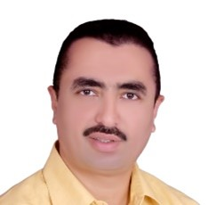

📐 Mathematics Consultant
🇦🇪 Arabic, 🇬🇧 English
📌 Mathematics Consultant, WEST TANTA EDUCATIONAL ADMINISTRATION, Tanta, Egypt — August 2022 – Present
📌 Manager, GYATH ELDEEN ENGLISH SCHOOL, Tanta, Egypt — October 2018 – August 2022
📌 Manager, ELEMAM ELSHAFIE ENGLISH SCHOOL, Tanta, Egypt — August 2015 – October 2018
📌 Maths Teacher, Ali Bin Abitalib Independent School, Doha — September 2013 – August 2015
📌 Maths Teacher, ELSDEEK Independent, Doha, Qatar — January 2011 – August 2013
📌 Mathematics Consultant, INTEGRATED LANGUAGE SCHOOL, Tanta, Egypt — January 2008 – September 2011
🎓 Bachelor of Mathematics, Tanta University, Egypt — September 1992 – May 1996
🎓 Diploma in Teaching Mathematics, Tanta University, Egypt — September 1997 – May 1998